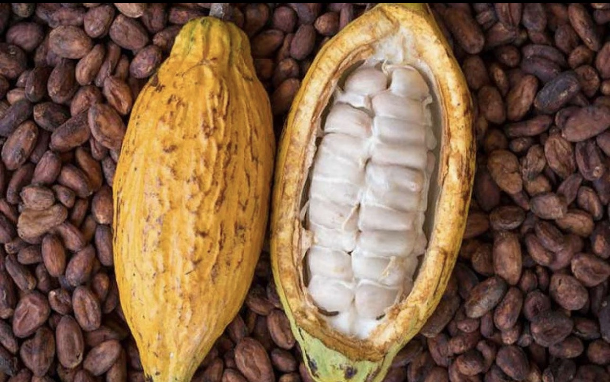

Misión
Ofrecer una experiencia gastronómica que destaque el cacao y los sabores de Tabasco con calidad, creatividad y calidez.
TRADICIÓN · CULTURA · SABOR
Descubre el cacao tabasqueño a través de sabores, recetas y experiencias que celebran nuestras raíces.

 Un legado que florece
Un legado que florece
NUESTRA HISTORIA
En Sabor & Arte celebramos la riqueza del cacao tabasqueño y su lugar en la cocina mexicana. Nuestra propuesta une ingredientes regionales, creatividad y respeto por las tradiciones.
Queremos que cada visita sea una oportunidad para conocer el cacao desde su origen hasta sus deliciosas posibilidades en la mesa.
Ofrecer una experiencia gastronómica que destaque el cacao y los sabores de Tabasco con calidad, creatividad y calidez.
Ser una propuesta reconocida por compartir la cultura del cacao tabasqueño y promover el orgullo por nuestra gastronomía.
Honrar el origen, valorar el trabajo de quienes cultivan y transformar ingredientes locales con respeto e imaginación.
HECHO CON CACAO
Una propuesta de platillos y bebidas inspirados en los sabores de nuestra región.

Pollo bañado en mole especiado con cacao y notas ligeramente amargas.
$185 MXN
Bebida caliente de cacao con canela y un toque de vainilla.
$65 MXN
Bizcocho húmedo con chocolate y una cubierta suave de cacao.
$95 MXN
Bebida tradicional de maíz y cacao, servida fría.
$45 MXN
Cuadro de chocolate con centro suave y trocitos de cacao.
$70 MXN
Verduras de temporada con una salsa salada de cacao y especias.
$90 MXN
Helado cremoso de chocolate, terminado con nibs de cacao.
$75 MXN
Galletas horneadas con cacao y chispas de chocolate.
$55 MXNDEL CAMPO A LA COCINA
El cacao tiene una larga historia en Mesoamérica y forma parte de tradiciones alimentarias y culturales de pueblos originarios. En Tabasco sigue siendo un símbolo de identidad regional.
Después de extraer las semillas de la mazorca, se fermentan durante varios días y luego se secan. Estos pasos ayudan a desarrollar los aromas que caracterizan al cacao.
El método bean-to-bar busca controlar el proceso desde la selección del grano hasta la barra: limpieza, tostado, descascarillado, molienda, refinado y moldeado.
UN MUNDO DE SABORES
Ilustraciones de muestra para organizar la galería. Puedes sustituirlas por fotografías propias.



QUIÉNES SOMOS
Reemplacen “Integrante” con los nombres completos del equipo y agreguen sus fotografías con uniforme de chef si la guía lo solicita.

Líder y encargado de GitHub
Investigación histórica
Menú y especialidades
Fotografías y diseño
Programación y revisión
TE ESPERAMOS
Completa el formulario de demostración para practicar cómo se vería una reservación en la página.
Aviso: este formulario es demostrativo y no envía reservas reales.
ENCUÉNTRANOS
Los datos siguientes son ficticios y se incluyen únicamente como ejemplo para el proyecto escolar.
C0malcalco, Tabasco, México
9371384318
contacto@saborarte.example
Lunes a domingo · 1:00 p. m. – 9:00 p. m.